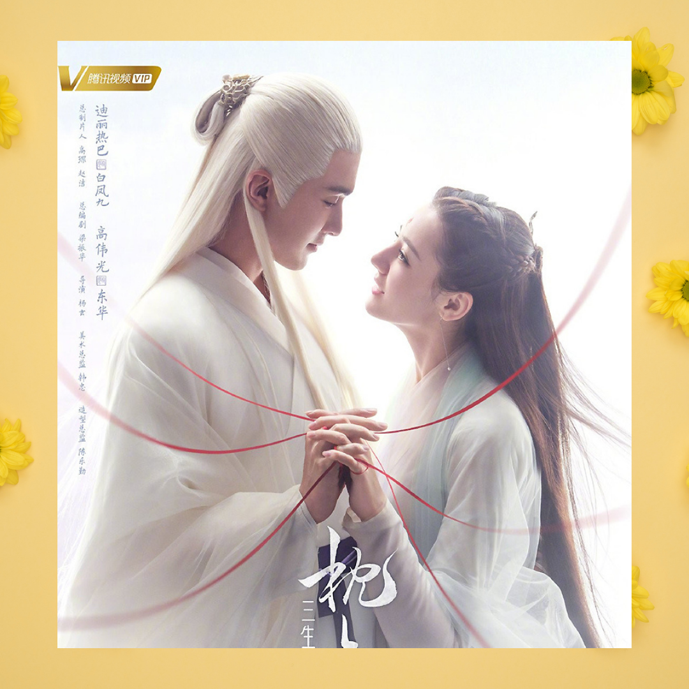
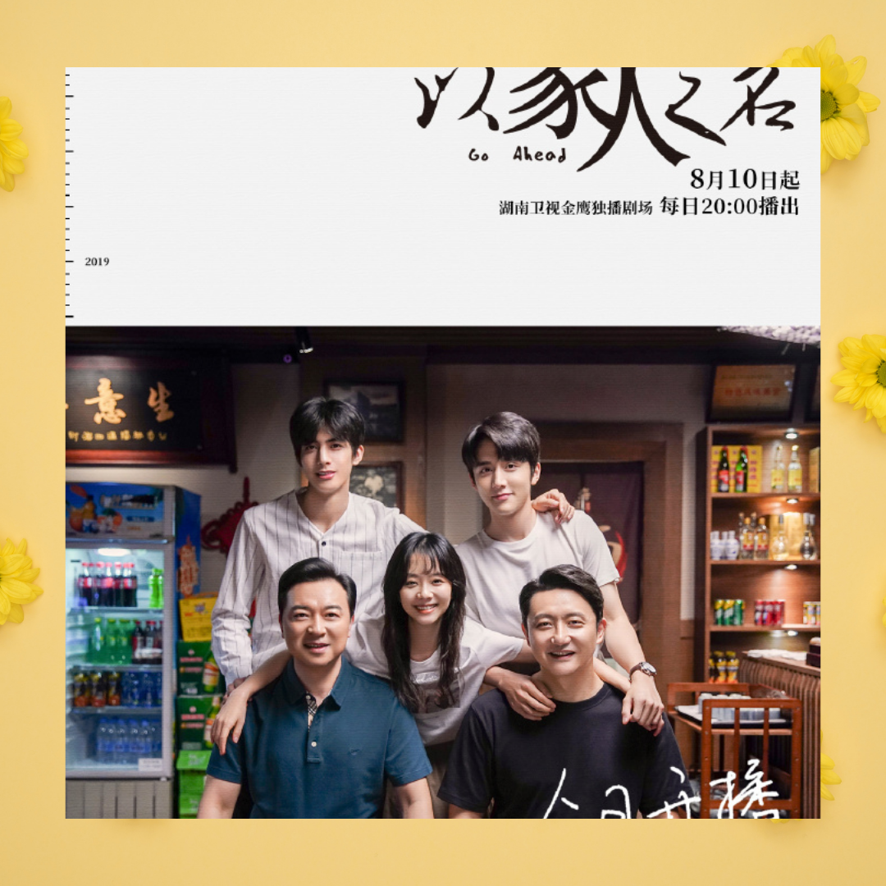
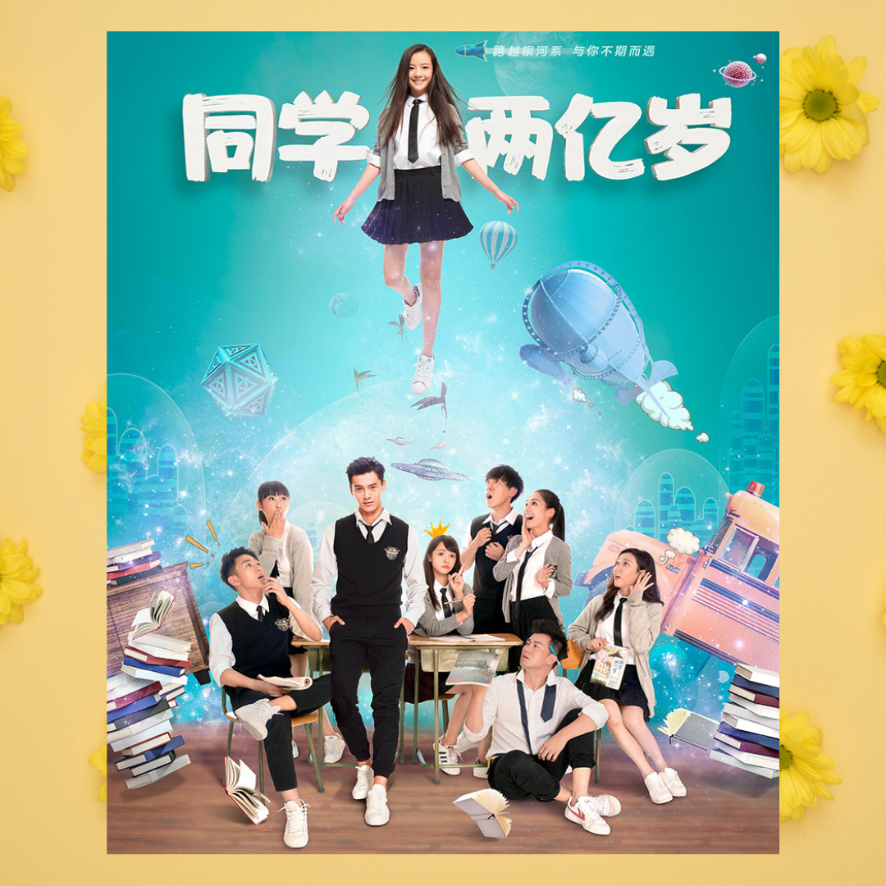
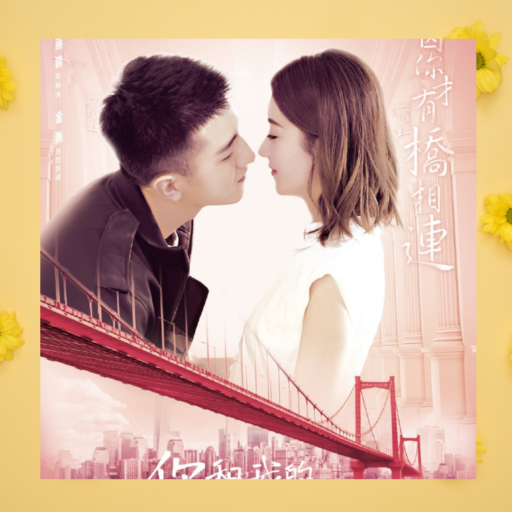
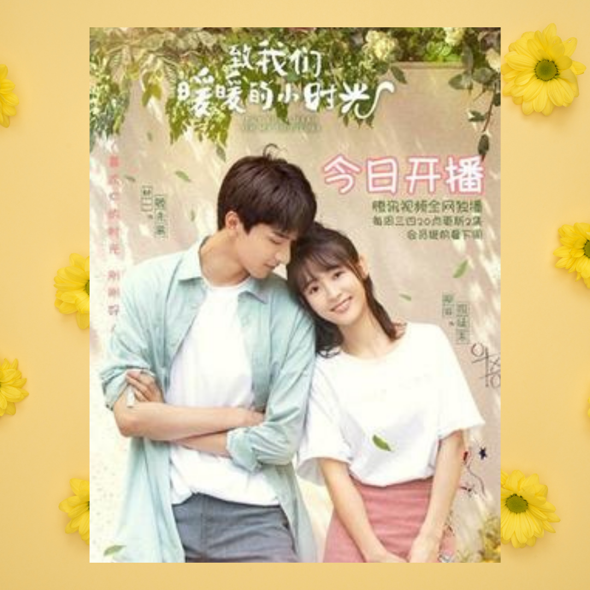
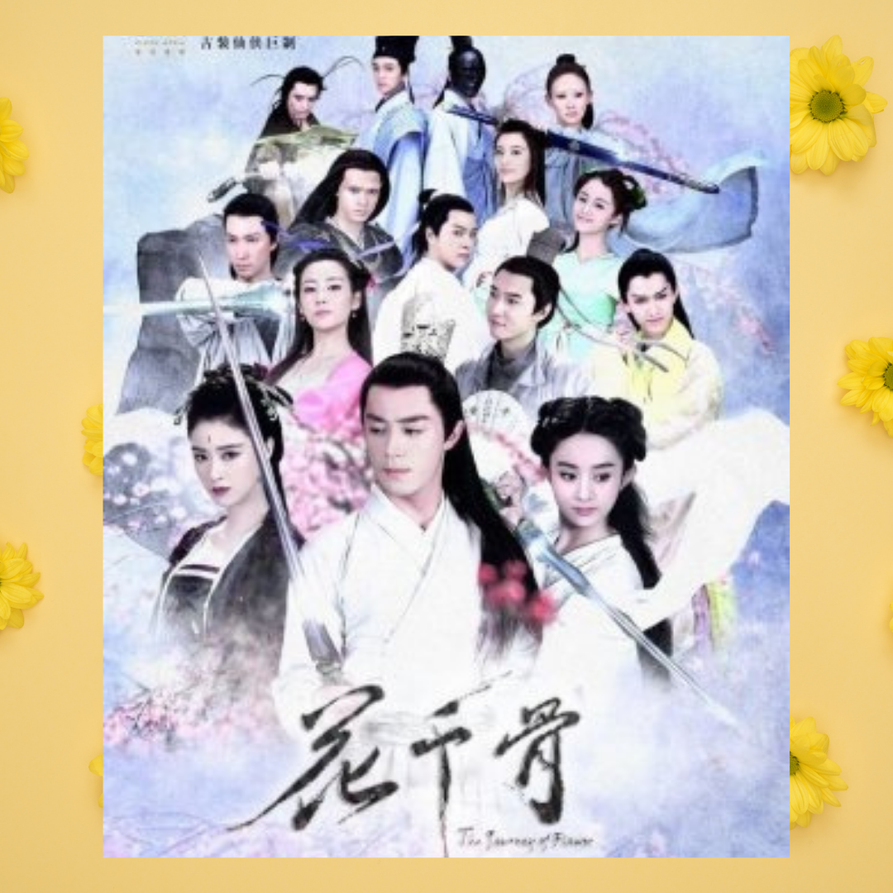
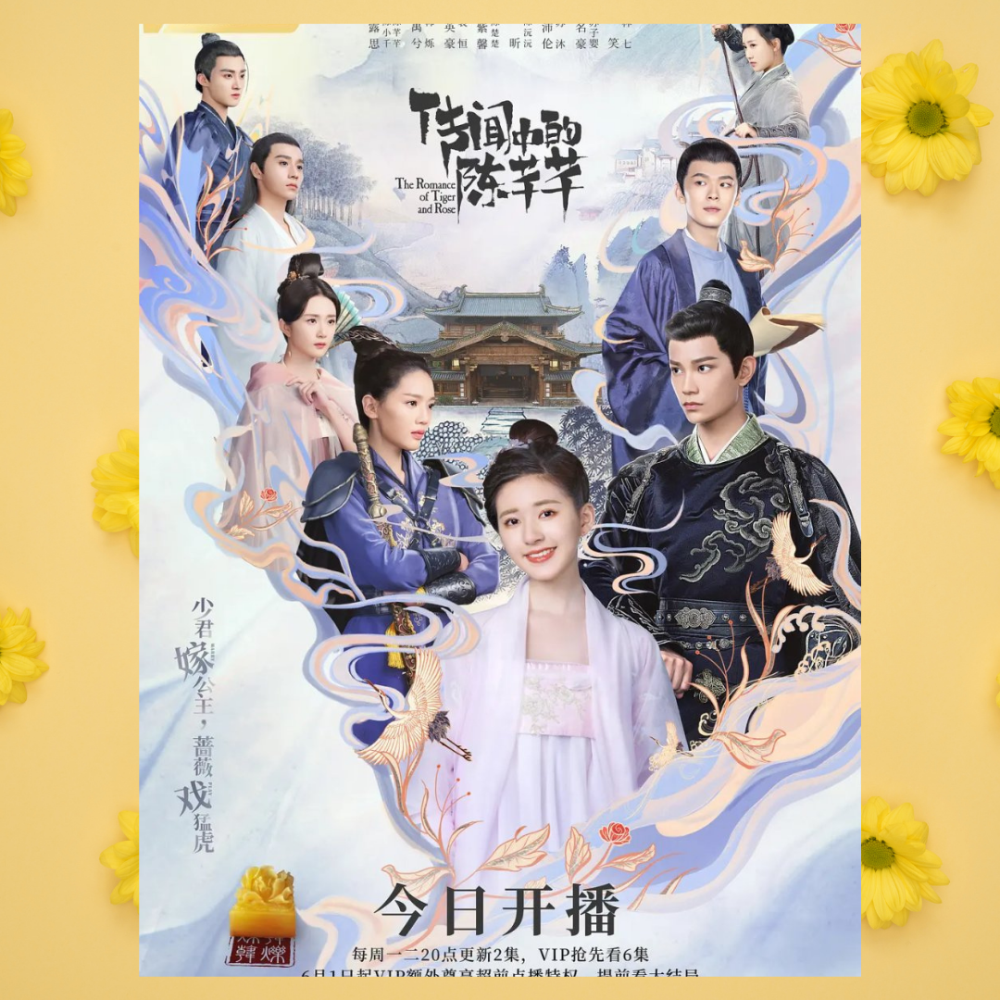

It starts off with high school classmates Chen Xiao Xi and Jiang Chen who are also neighbors. Xiao Xi, a cheerful girl who doesn't study much, is expressive about her admiration towards Jiang Chen, the popular guy known for his looks and high grades. Together with their fellow classmates the funny Lu Yang, athletic but loyal Jing Xiao, and cool swimming team member Wu Bo Song, they embark on high school life to university until their adult life.
Eternal Love of Dream

Queen of Qing Qiu, Bai Feng Jiu, is the only red nine-tailed fox in the world. One day, Feng Jiu is attacked by a savage beast while seeking cultivation in the mountains and is saved by the first emperor of Heaven, Dong Hua. Grateful and feeling indebted, Feng Jiu accompanies Dong Hua to vanquish the Demon Lord. As the two spend time together, Feng Jiu realizes her gratitude towards Dong Hua has slowly evolved into love. Unfortunately, Dong Hua has long forgotten what love is. Although the coldest hearts can melt with time, will countless lifetimes be sufficient to bring these two hearts together?
Go Ahead

The story revolves around three troubled youths who find solace in their common experiences to become the best family that they can be for each other. Growing up in dysfunctional households, three individuals who are unrelated by blood treat each other like family as they yearn for the love that they cannot find at home. Eldest brother Ling Xiao, second brother He Zi Qiu, and youngest sister Li Jian Jian grow up together, experiencing life’s joy and strife as they support each other’s chosen paths. As Ling Xiao and He Zi Qiu graduate from high school, they return to their original families. Nine years later, the three are reunited, but the heartaches from their complicated family past become a shadow that constantly lingers. Can they finally fix their personal issues to become better versions of themselves?
My Classmate From Far Far Away

Xuan Mo is an ordinary high school girl till the day she was unexpectedly possessed by a female marshal from an alien civilization. Her outstanding ability amazes everyone around her. However, the highly intelligent female marshal has no clue how to act as a human being and has to learn everything from scratch. When her human life gets more enjoyable, someone discovers her secret.
Our Glamorous Time

Li Zhi Cheng is a former soldier who has been ordered to take over his family's business when business was going downhill. He has a fateful meeting with Lin Qian, an independent and capable white-collar who was freshly graduated and meeting difficulties in starting up her own business. Due to Li Zhi Cheng's complete lack of experience in business, nobody in the industry had hopes in this newly appointed CEO of Wen Da. But with the help of Lin Qian's working experience and drive, coupled with Li Zhi Cheng's wits and methods, they bring Wen Da's business to new heights together.
Put Your Head on My Shoulder

As Si Tu Mo's (Xing Fei) graduation is nearing, she is confused about her future plans. She is a student of accountancy who is interested in advertising field. Si Tu Mo likes Fu Pei (Tang Xiaotian), her childhood friend but is constantly disappointed by his lack of decisiveness. She tries out all sorts of things all the time and is unable to make her own decisions. She even almost becomes a worker at a sketchy company. Her ordinary days are suddenly shaken up when the genius Physics student Gu Wei Yi (Lin Yi) appears in her life. She is forced by her mother to move to his house, since Gu Wei Yi's mother and her mother were classmates. The two accidentally end up in living together relationship and before they know, they begin to fall in love. After the graduation, Gu Wei Yi travels to Germany for his scholarship while Si Tu Mo stays at their house. She misses him badly so she travels to Germany without informing Gu Wei Yi where they get married. In the end, it is shown that they both live happily with their son, Gu Mo Wei.
The Journey of Flower

It tells the story of Hua Qian Gu, on the day of her birth flowers wilted and the skies turned dark as her mother passed during child birth. Her father past away when she turned 16 years old. Before he died, he advised her to learn some skills in order to help her survive as it appears that she has the strange ability to lure demons and other worldly creatures through her scent. She heeds her fathers advice and heads to Mount Shu, where it is said there are people who are experts in dealing with demons and other creatures. However, upon reaching Mount Shu, her journey is stalled when she witnessed the death of the leader of the sect. Thus Qian Gu heads to the Chiang Lu sect to seek for help. There she meets Bai Zi Hua, the most gentle yet cold-hearted man, who becomes her teacher, mentor and lover. Besides Bai Zi Hua, are Dong Fang Yu Qing who cares for Qian Gu's safety and Sha Qian Mo who is the leader of the demon realm, that are also romantic interests of Qian Gu.
The Romance of Tiger and Rose

Chen Xiao Qian has dedicated her entire life to making her dream of becoming a well-respected screenwriter come true. Standing on the production set of the sweeping drama she penned through endless blood, sweat, and tears, Xiao Qian can hardly believe what she’s seeing: her work, come to life! Proud of the effort she put into creating this epic tale, Xiao Qian expects things on-set to go quickly and smoothly. But all her high-hopes are soon crushed as her script falls under the critical scrutiny of both the cast and crew. Hurt by the harshness of her peers, Xiao Qian vows to prove herself but things don’t go the way she planned. Mysteriously transported into the pages of her own story, Xiao Qian has now become the Third Princess, Chen Qian Qian, an insignificant side character with a horrible reputation and a short lifespan. Desperate to change her fate, Xiao Qian vows to do whatever it takes to ensure her survival. But the journey ahead won't be easy, especially not after she catches the attention of both the arrogant and manipulative prince, Han Shuo, and the impossibly perfect Minister of Education, Pei Heng. Wandering through a world of her own making, Xiao Qian is desperate, not only to survive, but to keep her heart intact as she tries to find her way back home. Will her efforts be enough or will she be stuck in this story forever?